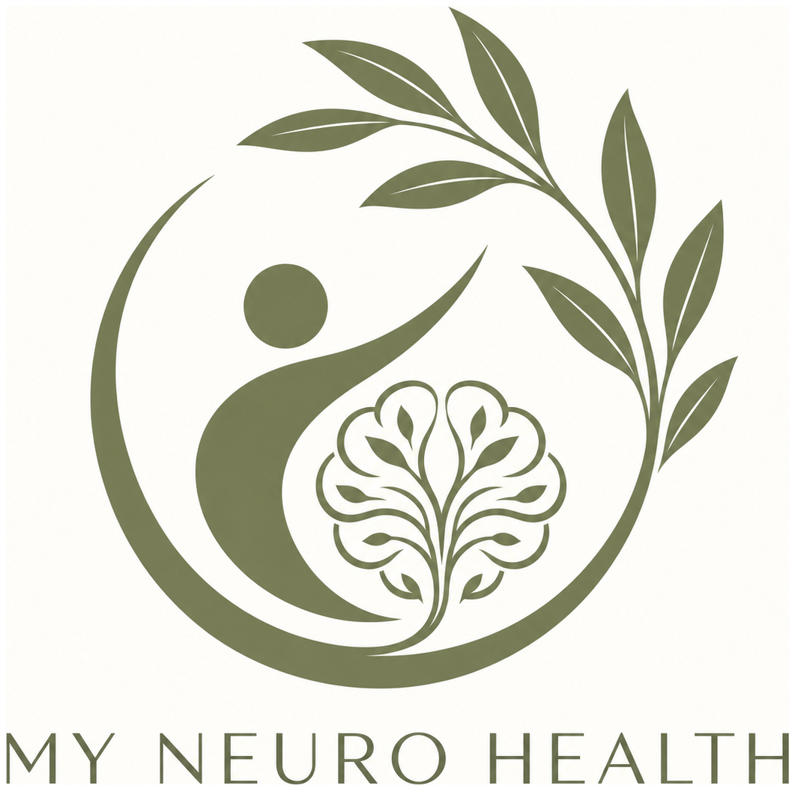

About My Neuro Health
Warm, human care. Specialist standards underneath.
My Neuro Health exists to make neurodevelopmental assessment feel more understandable, respectful and useful — not simply to provide a label.
Our purpose
Understanding should lead somewhere.
We want people to understand not only whether diagnostic criteria are met, but also their strengths, difficulties, needs and practical next steps.
Our brand uses an olive motif to reflect peace, rootedness, resilience, growth and hope. The visual identity is intentionally calm and understated; the clinical process underneath is intended to be structured, evidence-based and appropriately governed.

Our values
NEURO
N
NeurodiversityEvery mind is different.
E
EmpathyWe listen before we assess.
U
UnderstandingA diagnosis should bring clarity, not just a label.
R
RespectYour voice and experience matter.
O
OutcomesWhat happens after assessment matters too.